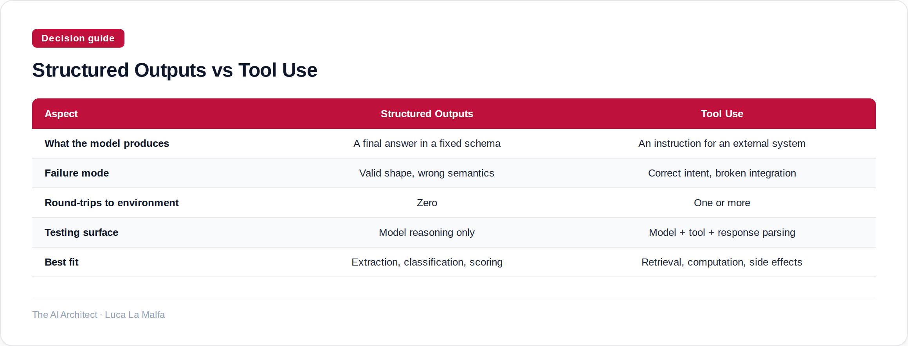

Two ways to constrain what an LLM returns — they look similar but fail in completely different ways.
September 28, 2026
Here is a distinction that trips up almost every team I work with in the first month: structured outputs and tool use are not the same thing dressed differently. Structured outputs say "give me your answer in this shape." Tool use says "before you answer, go do something." Conflating them produces systems that are either over-engineered or quietly broken — usually both at once.
The confusion is understandable. Both involve schemas. Both impose discipline on what the model produces. But the moment of execution is completely different. With structured outputs, the model is still the terminal step — it reasons, then it formats. With tool use, the model is an orchestrator — it decides, the environment acts, then the model integrates what came back. That asymmetry changes everything about how you design, test, and trust the system.
Option A
anthropics/claude-cookbooks — Tool-use and structured-output recipes (calculators, SQL, customer service agents).
Notice what the model did there: it produced a decision, not an answer. The SQL is an intent handed off to something else. That is the core of tool use — the model's output is an instruction to an external system, and the final answer depends on what that system returns. This is where tool use earns its complexity cost. You now have two failure surfaces: the model might generate a malformed or dangerous query, and the database might return something the model misreads. Structured outputs, by contrast, keep the whole thing inside the model. You get back a validated JSON object and that's it — no round-trip, no integration surface, no environment state to worry about.
So when do you actually want structured outputs alone? When the model's own knowledge or reasoning is sufficient, and you just need the result in a predictable shape — classification, entity extraction, scoring, summarization with a fixed schema. The failure mode there is subtler: the model will confidently produce valid JSON that is semantically wrong. A field called sentiment will always be one of your enum values, but it might be the wrong one. Validation catches shape errors, not reasoning errors. That is a trade-off worth naming explicitly before you ship.

Option B
modelcontextprotocol/servers — Reference MCP server implementations that expose tools to LLMs.
MCP is worth the investment when you have multiple models or agents that need to share the same tool definitions — it externalises the schema contract so you're not duplicating it inside every prompt or every SDK call. The cost is operational: you now run a server, you manage a transport layer, and you have to think about what happens when that server is unavailable mid-conversation. For a single-model internal prototype, that overhead is usually not worth it. For a production setup where three different agents need to hit the same inventory system, it pays for itself quickly.
The honest summary: use structured outputs when you want a reliable shape around the model's own reasoning. Use tool use when the model needs to touch the world to produce a correct answer. And use MCP when you want the tool contract to outlive any single model integration. These are not stages on a spectrum — they're different bets about where the intelligence lives and where the risk sits.
Inspired by Bluesky reply bot checker (Simon Willison)